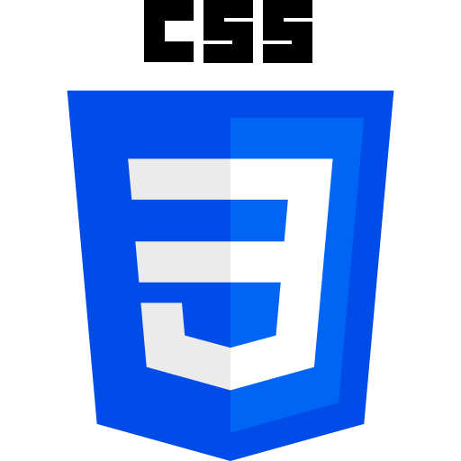
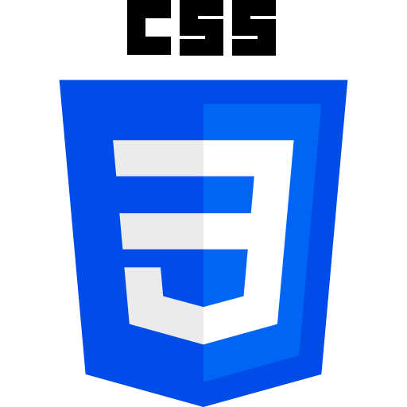

Projets
Reboot
Durant 3 jours, mon équipe et moi même avons dû réaliser un projet sur le thème de l'écologie.
Nous avons décidé de faire un site internet inéractif et accessible pour le plus de personne possible.
Nous avons commencer par chercher exactement ce que l'on voulait faire, pour ce projet et c'est là que l'on
s'est mis d'accord pour faire un site intéractif.
Ensuite une partie de l'équipe et moi même avons maquetté le site
sur le logiciel Figma, pendant que l'autre partie était entrain de créer un script pour les différentes histoires
du site.
Une fois la maquette finis nous avons donc commencer à coder pour mettre ce que l'on a fait en oeuvre sur
un site, on coder avec différents langages qui sont HTML5, CSS3 et du JavaScript.
En parallèle une autre partie de
l'équipe nous désignaient les illustrations que l'on allait devoir ajouter sur le site.
Pour finir vient le jour du classement des projets, et notre projets a été classé dans le top 10, dans le domaine
de la créativité.
Pour voir le site cliquez ci-dessous sur le lien.
 



Kcaldata
Création d'un site web avec Ruby on rails
Durant 4 jours, en binôme nous avons maquetté et réalisé un site internet sans thème particulier.
avec mon bonôme nous avons donc choisis de créer un site internet de recette avec des valeurs nutritionnels
pour chaque plats. que l'on peut ajouter directement sur le site internet.
Pour commencer nous avons utilisé le logiciel Figma pour mettre en image nos idées de design
du site. Ensuite nous avons commencé à coder avec le framework Ruby on Rails en utilisant
une machine virtuelle, Avec le framework nous avons ajouté du HTML5,
du SCSS et un autre framework qui est Boostrap.